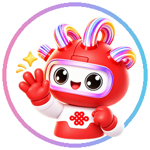
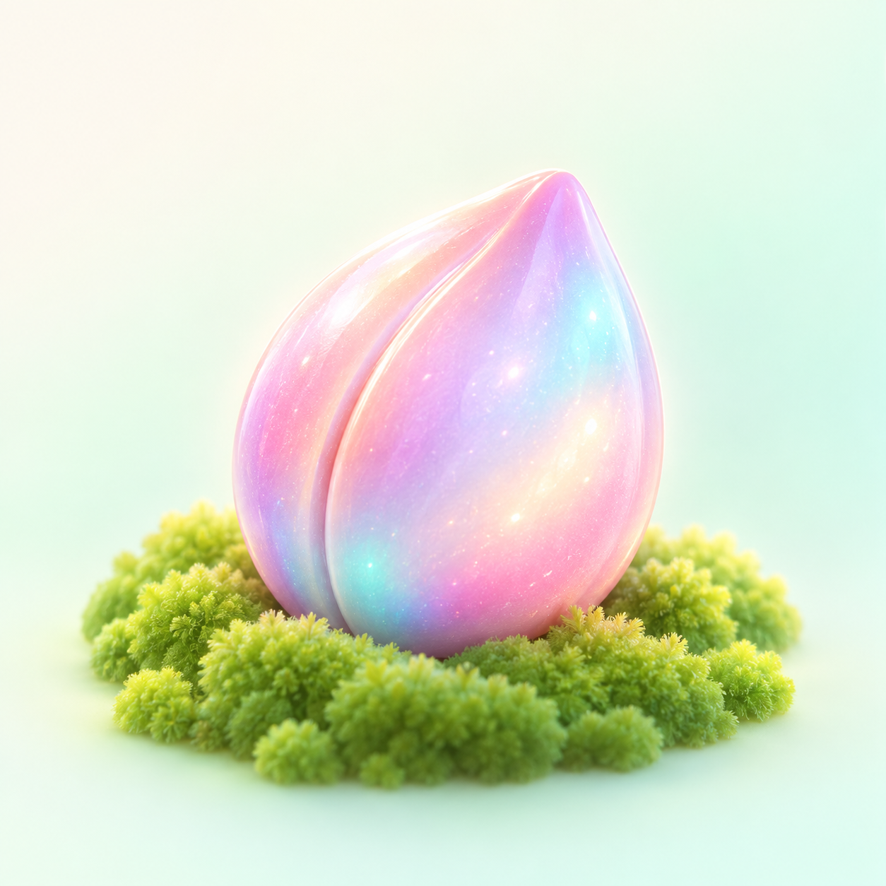
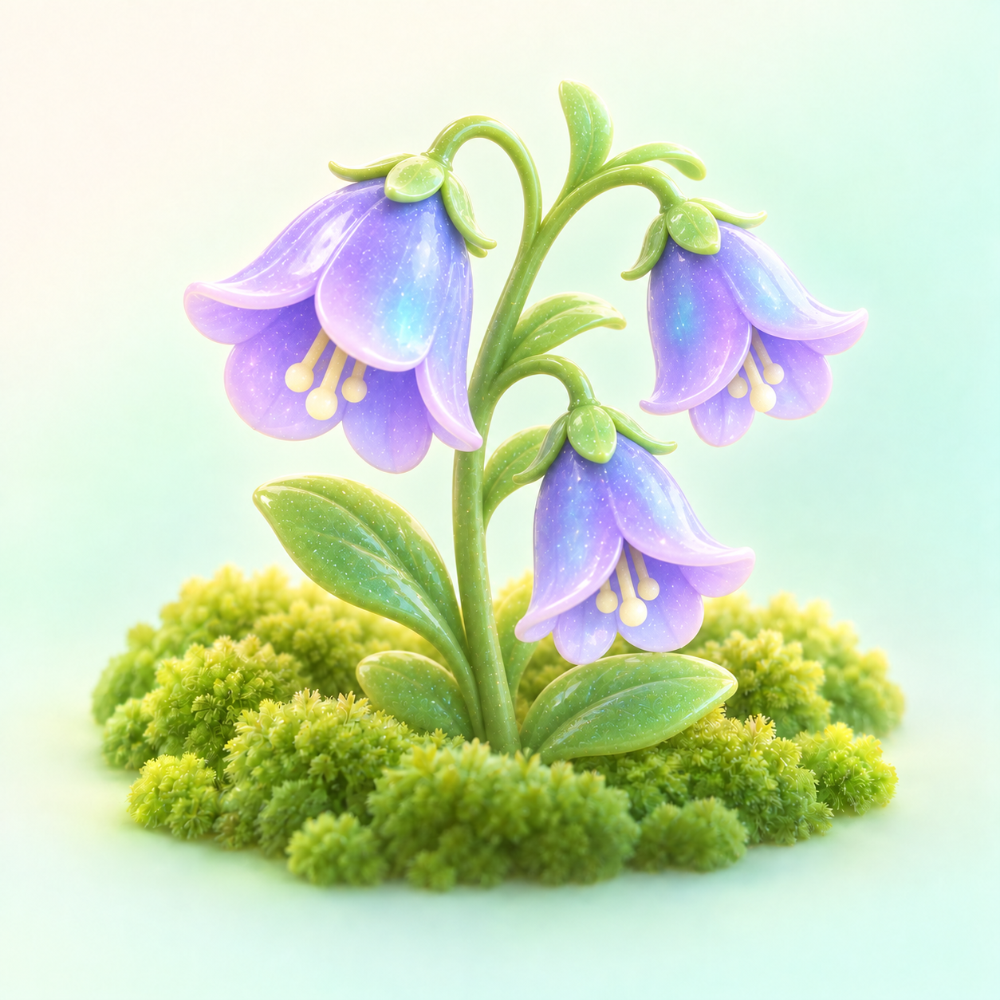

今天又向前走了一点。
TIME & WEATHER
工作会过去，
成长会留下来。
有些工作完成以后，只剩下一个打勾。有些忙碌结束以后，甚至来不及回头看看。
所以通通想替你把这些容易被忘掉的瞬间留下来：能量、亲密度、花朵和成长记忆。
你只管认真生活，剩下的交给通通。看看今天留下了什么 ↓☀
你好呀，今天也一起慢慢来。TODAY'S WEATHER
今天，过得怎么样？
先看到的不是 KPI，而是属于今天的状态。通通会认真把它们记下来。
陪伴不是一天养成的，我们慢慢来。
花苞已经出现，好像藏着什么秘密。
今天不是完美的一天，但也是认真生活的一天。
🐾 第一站
GROW TOGETHER
你的通通，
也会慢慢长大
它不是固定在页面角落的头像。一起工作的时间越久，它越熟悉与你相处的方式。
第一次见面：“你好呀！以后请多关照～”
后来，它会记得你拖了很久的任务；也会在项目终于结束时，认真夸你三分钟。
等级没有终点，因为陪伴本来就不该有一个“满级”。通通亲密度1,860Lv.2 · 每一次真实行动都会多认识你一点

打招呼通通今天想对你说
你好呀！以后请多关照～
每一天第一次见面，都会多一点熟悉。⚡ 第二站
EVERY STEP COUNTS
通通能量站
今天做过的事情，不应该悄无声息地消失。它不是绩效分，也不是另一张考勤表。
Lv.4346/ 400今日获得 +16
今天的你，确实做了一些事情。
距离 Lv.5 还有 54 点。完成工作、持续使用通通、推进确认过的事项，以及重复遇到花朵，都可能让这份记录继续向前。
每日首次使用：基础能量 +5
连续使用：获得连续奖励
当天确认任务全部完成：额外 +5
重复花朵：按品质返还能量
最近，你一直在向前走。
连续成长 6 天周一周二周三周四周五今天
Lv.1初见→Lv.3新主题→Lv.5新周报模板→🔒前方还有东西先不告诉你。
🌱 第三站
WEEKLY BLOOM
通通小花园
一周，只开一朵花。不签到，不浇水，也不会因为忘记它而枯萎。

神秘种子已经埋下
成长 1 / 5“现在还什么都看不出来。”
它好像长大了一点
成长 2 / 5“不许偷看答案。”

继续生长中
成长 3 / 5“已经过了一半啦。”
花苞初现
成长 4 / 5线索：蓝紫云雾 · 初夏
蓝花楹
星辉 · 图鉴 10 / 11“这朵花送给认真生活的你。”
周一播种，周五开花。
即使这周某一天你没有打开通通，它依然会静静长大。你负责过完这一周，花负责替你记住这一周。
10 / 11 COLLECTION
我的花朵图鉴
还有 1 种花等待相遇

风铃草流光“老朋友再次见面，也值得开心。”重复遇到同一朵花，会转换成额外能量。
🌙 第四站
GOOD NIGHT, TODAY
通通祈愿
进入明天以前，通通想给今天留几十秒钟。它不问“是否完成全部目标”，只问：今天想带着什么离开？
🌙收下今天的祈愿轻轻点一下
🌙 今日祈愿
山高路远，自有花开。
不必急着证明今天有没有意义。很多事情，本来就需要慢慢发生。
🎙 第五站
VOICE OF TONGTONG
今天的通通，
会怎么和你说话？
同一句“今天辛苦了”，在开心、疲惫和庆祝的时候，听起来应该不一样。
真棒 · 正在对你说
哇——今天这个进度真的很漂亮！我申请立刻给你发一朵小红花！
情绪不只是表情，它也会根据当天的状态改变陪伴你的方式。
WHY TIME & WEATHER
为什么叫「时光晴雨」？
我们没办法保证每一天都是晴天。时光晴雨也不是为了把每一天强行变成晴天，它只是想陪你把这些天气都走过去。
☀今天很顺利🌤今天稳稳向前🌦今天有一点波折☁今天需要慢一点🌙今天先到这里
开心的时候，一起庆祝。疲惫的时候，少催你一点。完成了，就留下纪念。没完成，也把今天好好收起来。明天见。
通通陪你工作
处理今天的重点
把努力变成能量
通通陪你收尾
收下今日小结
留住一次祈愿
花园慢慢生长
播种、成长、开花
成为成长记录
花朵越来越多
成就墙慢慢亮起来
TIME & WEATHER
日子会继续往前走。
有些努力会被写进周报，有些成果会成为 PPT 上的一行数字。还有一些小小的坚持，也许没人注意到。没关系。通通替你记着。🌸